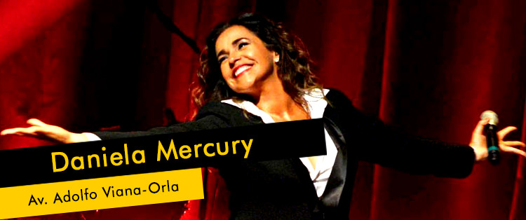
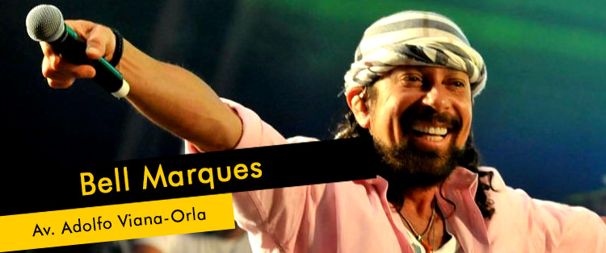
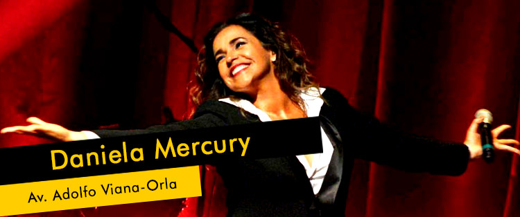
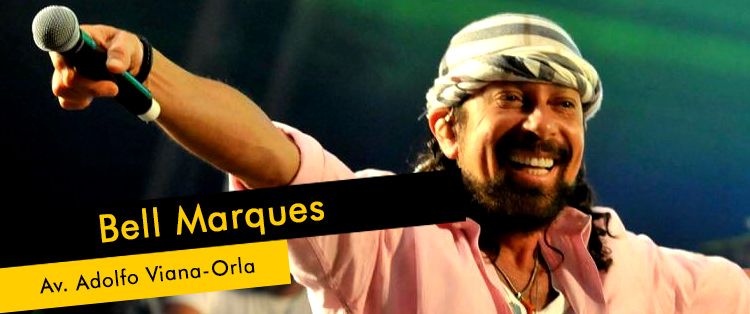
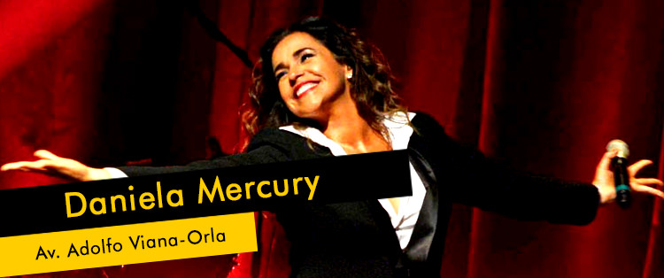
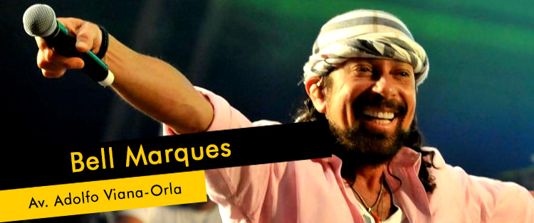

No ritmo das estrelas. Saiba quem agitará o #CarnaJua2016, fazendo a alegria da galera.

 





No ritmo das estrelas. Saiba quem agitará o #CarnaJua2016, fazendo a alegria da galera.


O #CarnaJua2016 é democrático, escolha a corte que irá animar nossa folião!


Os bloco oficiais estão no #CarnaJua2016 trazendo excelentes atrações, vamos curtir juntos!


Tierre Uesdle Ribeiro dos Santos, 25 anos, natural de Juazeiro, mora na Rua Francisco Martins Duarte, Centro, Juazeiro. É técnico em Serviços Públicos, especializado em Política, cursando o 3º período da Faculdade de Publicidade e Propaganda. Foi candidato ano passado a Rei Momo não chegando a ser eleito. O que passará ao folião de Juazeiro neste carnaval é muita paz, muita alegria, principalmente, e que todos venham brincar o carnaval com pensamentos positivos.


Adelânia Nicácio da Silva, 21 anos, estudando técnica em Segurança do Trabalho, no IFBA, natural de Juazeiro, e quer ser Rainha do Carnaval porque gosta muito de festa e se identifica muito com o Carnaval de Juazeiro. Muita animação é o que o folião pode esperar da candidata, que se sente preparada para o Reinado de Momo. Elogia a importância do voto popular para a eleição do Rei e da Rainha, o que permitiu sonhar com o título de Rainha do Carnaval de Juazeiro 2016.


Bárbara Santana Maceno, 18 anos, natural de Juazeiro, estudando para o concurso da PM, quer ser Rainha do Carnaval de Juazeiro porque já vem de muito tempo essa vontade de participar, vem da família, o samba está no sangue, o avô era dono de Escola de Samba, A Voz do São Francisco, segundo ela “já vem da raiz, está no sangue”. Gosta muito de dançar, curtir atrás do trio, e a sua campanha é que o folião pode esperar por uma rainha muito alegre.


Eliene Bitencourt, 46 anos, nível médio completo, natural de Juazeiro, gerencia uma consultoria financeira, e está candidata a Rainha do Carnaval de Juazeiro, porque acredita que é um sonho de toda adolescente, mas somente agora por incentivo do filho, resolveu sonhar com a coroa de Rainha do Carnaval de sua cidade. “Agora chegou a minha hora”. A candidata promete levar para a avenida muita alegria, animação, paz, harmonia, e como ela mesma diz: “Eu sou o próprio carnaval”.